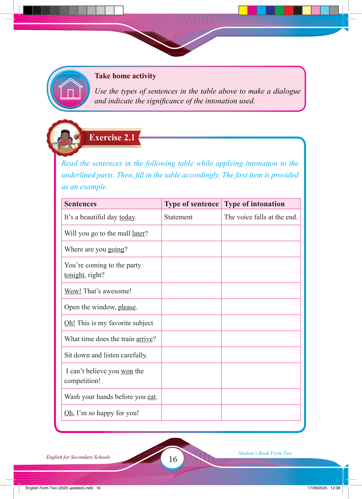

16
Student’s Book Form Two
English for Secondary Schools
Exercise 2.1
Take home activity
Use the types of sentences in the table above to make a dialogue and indicate the signifi cance of the intonation used.
Read the sentences in the following table while applying intonation to the underlined parts. Then, fi ll in the table accordingly. The fi rst item is provided as an example.
Sentences
Type of sentence Type of intonation
It’s a beautiful day today.
Statement
The voice falls at the end.
Will you go to the mall later?
Where are you going?
You’re coming to the party tonight, right?
Wow! That’s awesome!
Open the window, please.
Oh! This is my favorite subject
What time does the train arrive?
Sit down and listen carefully.
I can’t believe you won the competition!
Wash your hands before you eat.
Oh, I’m so happy for you!
17/09/2025 12:38